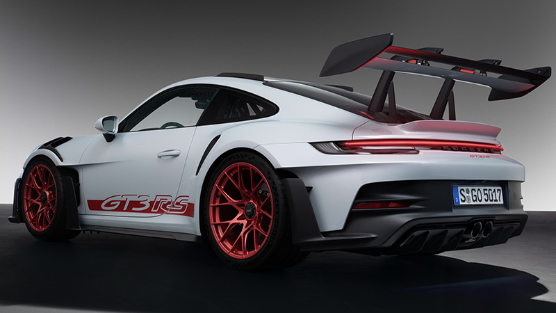
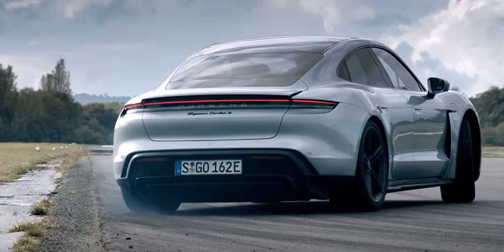
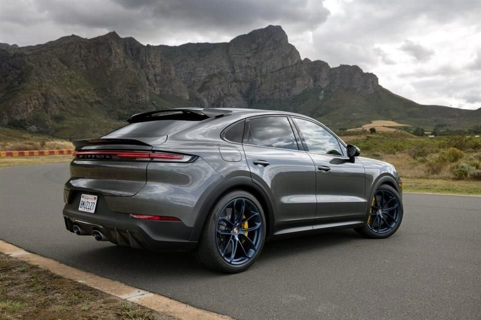

Porsche 911 GT3 RS



Video ilustrativo al producto.
Porsche 718 GT4 RS


Video ilustrativo al producto.
Porsche Taycan Turbo S



Video ilustrativo al producto.
Porsche Cayenne Turbo GT



Video ilustrativo al producto.
Porsche Panamera Turbo S


Video ilustrativo al producto.